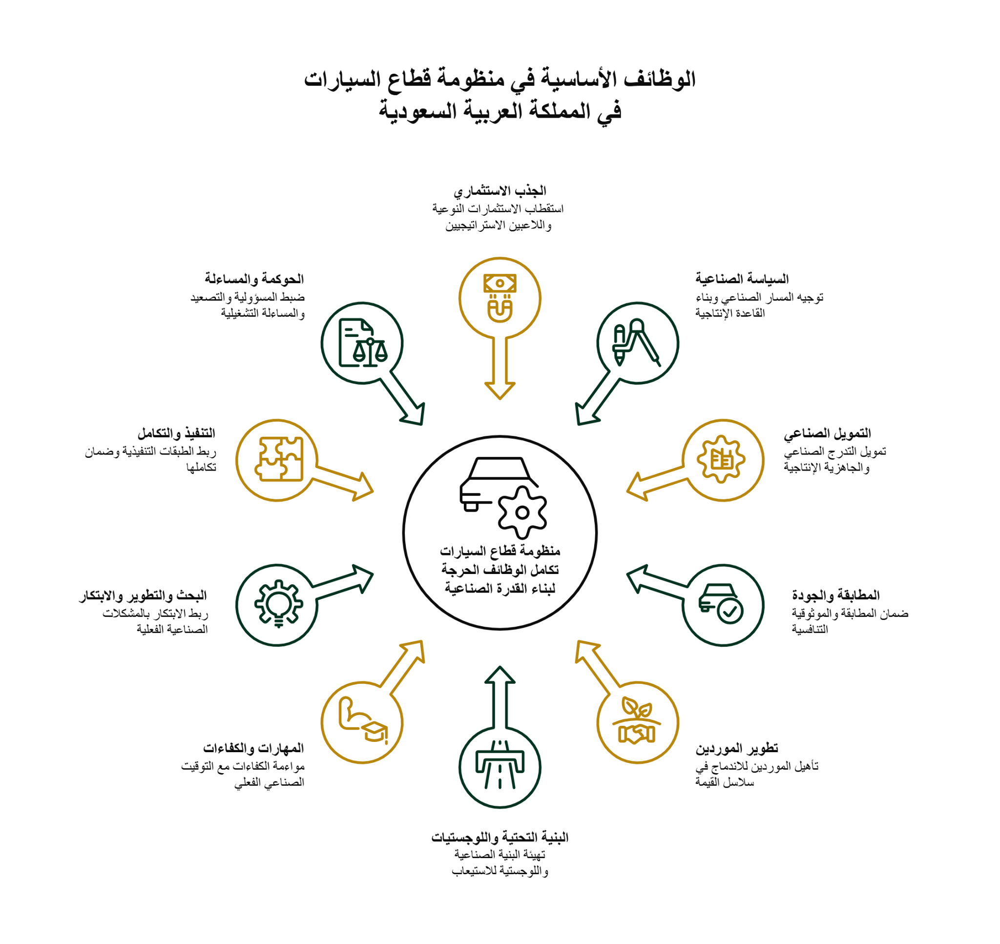
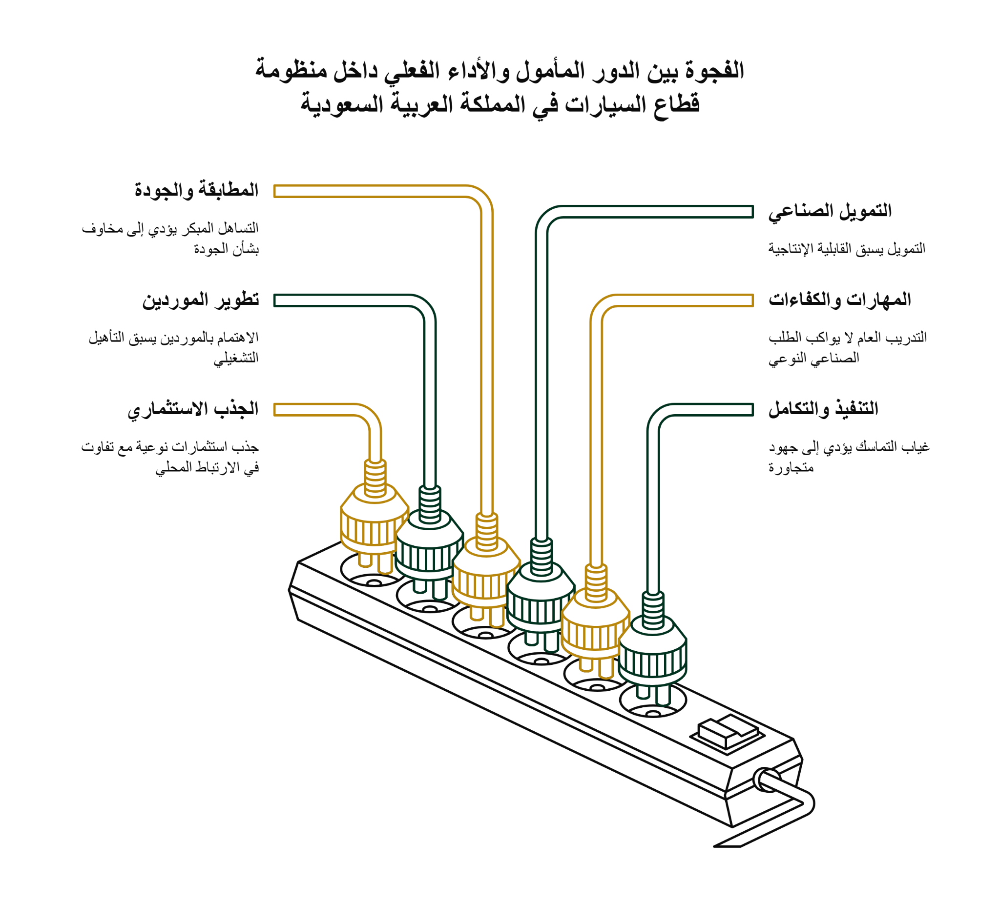
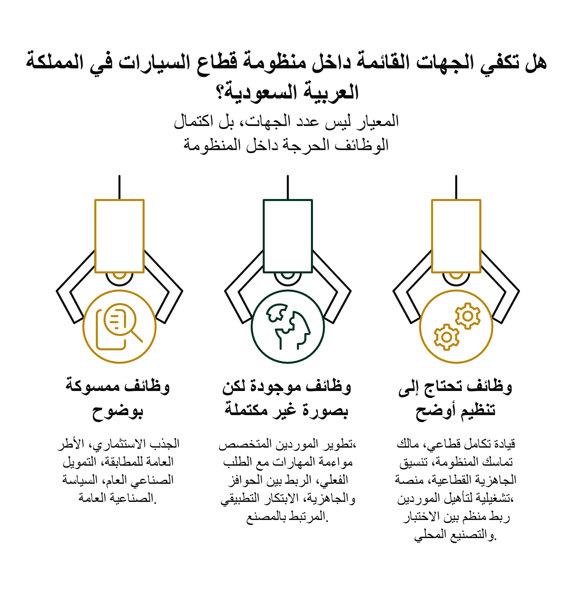
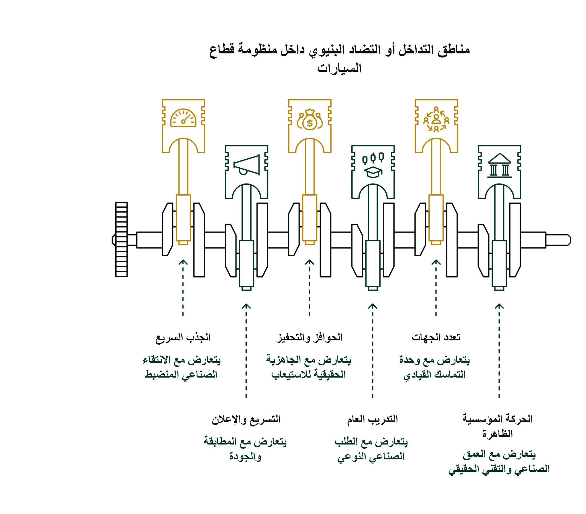
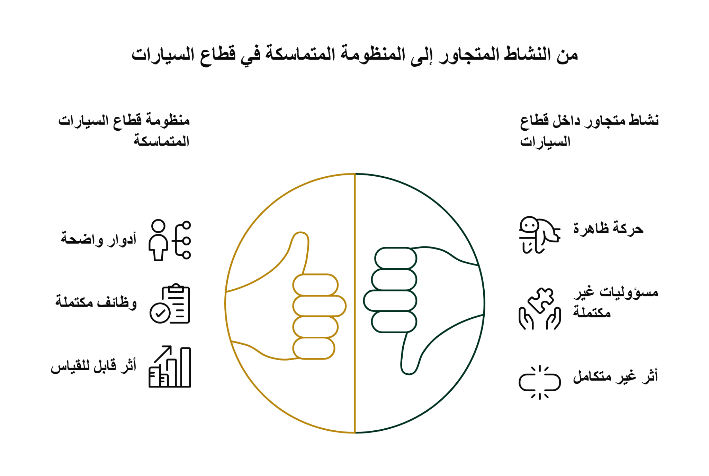

قطاع السيارات في المملكة العربية السعودية
الجهات المحورية بين الدور المأمول والأداء الفعلي
قراءة مؤسسية في اكتمال الأدوار، وجودة الإسهام، والفجوات البنيوية داخل المنظومة
خط تجميع في مصنع سيارات حديث — صورة الغلاف
الدكتور محمد بن إبراهيم بن عبدالله الماجد
مقال قطاعي استراتيجي | أبريل 2026
الرئيس الفخري لمركز جامعة كاليفورنيا في بيركلي للتنمية وريادة الأعمال
قطاع السيارات في المملكة العربية السعودية
الجهات المحورية بين الدور المأمول والأداء الفعلي
ملخص تنفيذي بعد أن أصبح حضور قطاع السيارات في المملكة أكثر وضوحاً من حيث الاستثمارات المعلنة، والمشروعات الصناعية، وارتفاع الاهتمام المؤسسي، لم يعد السؤال المركزي هو ما إذا كان القطاع قد دخل دائرة الفعل الوطني، بل ما إذا كانت الجهات المحورية تتحرك ضمن منظومة متماسكة قادرة على تحويل هذا الزخم إلى عمق صناعي وتقني مستدام. تتناول هذه المقالة البعد المؤسسي للقطاع: من يحمل الأدوار الجوهرية؟ أين تتقدم بعض الوظائف؟ أين تبقى الفجوات؟ وهل تكفي الجهات القائمة بصورتها الراهنة لحمل القطاع إلى مرحلة أكثر نضجاً وانضباطاً؟

مدخل: لماذا يجب النظر إلى الجهات الآن؟
بعد المقالة الأولى التي تناولت الفجوة بين زخم التفعيل وجاهزية المنظومة، يصبح الانتقال إلى سؤال الجهات أمراً طبيعياً، بل ضرورياً. فالتقدم في قطاع السيارات لا يصنع نفسه تلقائياً، ولا تنتجه كثرة الإعلانات أو ازدياد عدد الأطراف المنخرطة فيه. القطاع لا يتحول إلى قدرة وطنية راسخة إلا عندما تكون وظائفه الحرجة موزعة بوضوح، ومترابطة بقدر كافٍ، وخاضعة لمساءلة تشغيلية تمنع التقدم الواجهي من أن يسبق العمق الصناعي والتقني.
ولهذا فإن قراءة الجهات ليست تمريناً وصفياً في تسمية المؤسسات، ولا مراجعة بروتوكولية لمن يوجد في المشهد. المقصود هو شيء أكثر دقة: النظر إلى الجهات بوصفها حوامل لأدوار نوعية داخل منظومة قطاع السيارات، ثم قياس المسافة بين ما يفترض أن تؤديه هذه الأدوار، وبين ما يظهر فعلياً في الواقع المؤسسي والتنفيذي.
المشكلة هنا ليست غياب الحركة. على العكس، المشهد يبدو أكثر نشاطاً وجدية من أي وقت مضى. لكن كثافة الحركة لا تكفي وحدها، لأن المنظومات الصناعية المعقدة قد تبدو متقدمة عند الواجهة بينما تبقى طبقات الموردين، والمطابقة، والمهارات، والبحث التطبيقي، والتكامل التنفيذي، أقل نضجاً مما توحي به الصورة العامة. من هنا تأتي أهمية المقالة الثانية: فهي تنقل النقاش من السؤال عن القطاع بوصفه فرصة، إلى السؤال عن القطاع بوصفه منظومة أدوار ومسؤوليات وقدرة على الاستيعاب.
القطاع لا يُبنى بكثرة الأطراف بل بانضباط الأدوار
من أكثر الالتباسات شيوعاً في القطاعات الناشئة أن يُفترض أن كثرة الجهات المنخرطة تعني تلقائياً نضج المنظومة. غير أن الواقع الصناعي أكثر تعقيداً من ذلك. فقد توجد جهات استثمارية، وصناعية، وتمويلية، وتنظيمية، وأكاديمية، ولوجستية، لكن تظل المنظومة أقل تماسكاً مما تبدو عليه إذا كانت الوظائف موزعة بصورة غير منضبطة، أو إذا كانت مسؤولية الربط بين هذه الوظائف غير ممسوكة بوضوح.
قطاع السيارات تحديداً لا يحتمل هذا النوع من التشتت. فنجاحه لا يعتمد فقط على وجود مصنع أو مشروع كبير، بل على تزامن طبقات متعددة: تأهيل الموردين، موثوقية المطابقة، ملاءمة الحوافز، جاهزية البنية التحتية، توقيت تنمية الكفاءات، الربط بين البحث التطبيقي والمشكلات الصناعية، ثم وجود حوكمة قادرة على اكتشاف الاختلال عندما يتقدم جزء من المنظومة أسرع من الأجزاء الأخرى.
بمعنى آخر، لا ينبغي أن تُقرأ المنظومة بمنطق «من موجود؟»، بل بمنطق «من يحمل ماذا؟ وبأي أثر؟». هذه النقلة مهمة لأنها تنقل الخطاب من الاحتفاء العام بالحراك، إلى فحص البنية الفعلية التي يُفترض أن تنتج جودة التوطين، واستدامة القيمة المضافة، والعمق الهندسي والتقني.
الوظائف الأساسية داخل منظومة قطاع السيارات
قبل تقييم أي جهة بعينها، يجب أولاً تحديد الوظائف الحرجة التي لا بد أن تكون ممسوكة داخل منظومة القطاع. أول هذه الوظائف هو الجذب الاستثماري النوعي؛ أي استقطاب لاعبين ومشروعات لا تضيف حركة فقط، بل ترفع القدرة الوطنية على التصنيع والتوريد والتعلم الصناعي. والثانية هي السياسة الصناعية التي توجه المسار وتحدد الأولويات وتربط المبادرات الكبيرة ببناء قاعدة إنتاجية أكثر عمقاً.
وتشمل الوظائف الحرجة أيضاً التمويل الصناعي، ليس بوصفه دعماً عاماً فقط، بل بوصفه أداة لتمويل التدرج الصناعي والجاهزية الفعلية. ويأتي بعد ذلك دور المطابقة والجودة، بوصفهما من عمود القطاع الفقري، لا كعناصر تنظيمية هامشية. كما يدخل ضمن الطبقات الحاسمة تطوير الموردين، وتهيئة البنية التحتية واللوجستية، ومواءمة المهارات والكفاءات مع التوقيت الصناعي الحقيقي، وربط البحث والتطوير والابتكار بالمشكلات الصناعية الفعلية.
ثم توجد طبقة كثيراً ما تُهمَل رغم أهميتها: التنفيذ والتكامل والحوكمة. فهذه الوظيفة لا تضيف قدرة تقنية مباشرة، لكنها تحدد إلى أي مدى ستتحول بقية الوظائف إلى منظومة متماسكة، أو ستبقى جهوداً متجاورة. هنا يصبح السؤال المؤسسي أكثر حساسية: هل كل وظيفة من هذه الوظائف ممسوكة بوضوح نسبي؟ هل بعضها موجود لكنه غير مكتمل؟ وهل توجد وظائف تحتاج إلى تنظيم أوضح وحامل مؤسسي أكثر تحديداً؟
من الدور المأمول إلى الأداء الفعلي
عندما ننتقل من تعريف الوظائف إلى تقييم الأداء المؤسسي، تظهر الحاجة إلى التفريق بين الدور المأمول وبين ما يظهر فعلياً في الواقع. فالجذب الاستثماري، على سبيل المثال، يفترض أن يستقطب استثمارات نوعية ولاعبين استراتيجيين يبنون قدرة وطنية متراكمة. إلا أن ما قد يظهر فعلياً هو جذب متسارع مع تفاوت في عمق الارتباط المحلي. في هذه الحالة لا يكون السؤال: هل جاء الاستثمار أم لا؟ بل: ما نوع الارتباط الذي خلّفه داخل المنظومة؟
وينطبق الأمر نفسه على تطوير الموردين. فالدور المأمول هو أن تتحول الشركات المحلية إلى موردين مؤهلين فنياً ومندمجين تجارياً داخل سلاسل القيمة. أما الواقع فقد يشهد اتساع الاهتمام بالموردين المحليين أسرع من التأهيل التشغيلي الحقيقي. وهنا يكمن الخطر في الخلط بين كثرة المهتمين وبين قيام قاعدة توريد راسخة.
وفي المطابقة والجودة، يفترض أن تحمي المنظومة الموثوقية الفنية والتنافسية الصناعية. لكن تحت ضغط التسريع قد تُفهم المطابقة أحياناً كعنصر إبطاء، مع أن التساهل المبكر يضعف أساس القطاع. كما أن التمويل الصناعي قد يسبق أحياناً اكتمال القابلية الإنتاجية، بينما قد ينتهي التدريب إلى طابع عام لا يواكب الطلب الصناعي النوعي. وفي البحث والتطوير والابتكار قد يبقى النشاط بعيداً عن المصنع إذا لم يُربط بمشكلات الإنتاج والجودة والأداء. وعندما تتراكم هذه الفجوات جزئياً، يظهر الخلل الأكبر: أن الجهود المؤسسية تبقى متجاورة أكثر من كونها متكاملة.
ولهذا فإن الرسم التحليلي لهذه المقالة لا يقيس «الأداء» بوصفه رقماً مجرداً، بل يقيس الفجوة بين الخط الذي يفترض أن تسير عليه الوظيفة، والخط الذي يظهر فعلياً في الواقع. كلما اتسعت هذه المسافة زادت احتمالات أن يتحول التقدم إلى زخم غير متكافئ؛ وكلما تقلصت اقترب القطاع من حالة الاستيعاب المتوازن.

هل تكفي الجهات القائمة؟
هذا السؤال لا يعني بالضرورة أن المملكة تحتاج إلى إنشاء كيانات جديدة كثيرة، كما لا يعني التقليل من قيمة الجهود القائمة. لكنه سؤال مشروع لأن معيار النضج المؤسسي ليس عدد الجهات، بل اكتمال الوظائف الحرجة داخل منظومة القطاع. قد تكون بعض الوظائف ممسوكة بوضوح نسبي، مثل الجذب الاستثماري، والأطر العامة للمطابقة، وبعض أدوات التمويل والسياسة الصناعية. لكن هناك وظائف أخرى تبدو موجودة بصورة غير مكتملة، مثل تطوير الموردين المتخصص، ومواءمة المهارات مع الطلب الفعلي، والربط بين الحوافز والجاهزية، والابتكار التطبيقي المرتبط بالمصنع.
وتوجد أيضاً وظائف تبدو بحاجة إلى تنظيم أوضح من حيث الحامل المؤسسي أو الآلية التنفيذية. من أبرزها قيادة تكامل قطاعي تربط الاستثمار والتصنيع والتمويل والمساءلة، ووجود مالك واضح لتماسك المنظومة، وآلية عملية لتنسيق الجاهزية القطاعية، ومنصة تشغيلية لتأهيل الموردين، وربط منظم بين الاختبار والتصنيع المحلي. هذه الطبقات لا تحتاج بالضرورة إلى مؤسسة جديدة بالاسم، لكنها تحتاج إلى تنظيم أوضح من حيث المسؤولية والأثر والارتباط ببقية المنظومة.
والفارق هنا مهم. فوجود وظيفة على الورق لا يساوي إمساكها مؤسسياً في الواقع. والجهة التي تحمل جزءاً من الوظيفة لا تعني أن الوظيفة أصبحت مكتملة. لذلك فإن سؤال «هل تكفي الجهات القائمة؟» لا يُجاب عنه بالقول إن المؤسسات موجودة، بل بتقدير مدى اكتمال الوظائف الحرجة، ومدى وضوح من يحملها، ومدى قدرتها على إنتاج أثر متراكم قابل للقياس.
والأهم من ذلك أن التنظيم الأوضح لا يعني بالضرورة المركزية الثقيلة، بل قد يعني ببساطة وضوح نقطة المسؤولية، ووضوح كيفية انتقال البيانات والقرارات، ووضوح من يرفع الإشكال عندما يتعثر مورد، أو تتأخر جاهزية، أو تنفصل الحوافز عن القابلية الإنتاجية. هذا النوع من الوضوح هو ما يرفع قيمة المؤسسات القائمة ويحول وجودها من حضور متجاور إلى منظومة أكثر نضجاً.

مناطق التداخل أو التضاد البنيوي
حتى عندما تكون الجهات حاضرة والوظائف معرّفة، قد تظهر داخل المنظومة توترات بنيوية أو تضادات في المنطق والحوافز. هذا لا يعني خصومة بين المؤسسات، بل يعني أن بعض الأدوار قد تدفع في اتجاهات مختلفة إذا لم تُضبط. فهناك فرق واضح بين منطق الجذب السريع ومنطق الانتقاء الصناعي المنضبط. الأول يكافئ السرعة والحركة وتوسيع الفرص، بينما الثاني يركز على نوعية الداخلين وقدرتهم على بناء عمق مستدام.
وينطبق الأمر نفسه على العلاقة بين التسريع والإعلان من جهة، والمطابقة والجودة من جهة أخرى. فالمنظومة التي تعطي الأولوية المطلقة للإعلان السريع قد ترى المطابقة بوصفها عبئاً زمنياً، بينما المنظومة الجادة ترى المطابقة جزءاً من الشرط التنافسي نفسه. وهناك أيضاً توتر بين الحوافز والتحفيز وبين الجاهزية الحقيقية للاستيعاب، وبين التدريب العام وبين الطلب الصناعي النوعي، وبين تعدد الجهات وبين وحدة التماسك القيادي، بل وبين الحركة المؤسسية الظاهرة وبين العمق الصناعي والتقني الحقيقي.
هذه التوترات لا ينبغي قراءتها كعيوب استثنائية، بل كسمات معتادة في القطاعات المعقدة. غير أن تجاهلها يخلق اختلالاً مزدوجاً: تتحسن الواجهة بسرعة، بينما تبقى طبقات الاستيعاب والموثوقية والربط الداخلي أقل نضجاً. وهنا تحديداً تظهر قيمة الحوكمة التشغيلية وآليات التصعيد والمسؤولية الواضحة.
وفي غياب هذا الضبط، قد يبدو كل طرف ناجحاً وفق مؤشرات تخصه، بينما يتراجع أداء المنظومة ككل. قد تنجح جهة في توسيع الأنابيب الاستثمارية، وتنجح أخرى في إطلاق برامج تدريب، وتنجح ثالثة في تفعيل مبادرات دعم، لكن يبقى الأثر الصناعي النهائي دون المستوى المطلوب إذا لم تُربط هذه النجاحات الجزئية داخل هندسة واحدة للمسؤولية والتصعيد والجاهزية.

من النشاط المتجاور إلى المنظومة المتماسكة
إذا جمعنا ما سبق، يمكن القول إن التحدي المؤسسي الحقيقي ليس في إضافة مزيد من الجهات إلى المشهد، بل في نقل القطاع من حالة النشاط المتجاور إلى حالة المنظومة المتماسكة. في النشاط المتجاور توجد حركة ظاهرة، ومسؤوليات غير مكتملة، وأثر غير متكامل. أما في المنظومة المتماسكة، فتوجد أدوار واضحة، ووظائف مكتملة بالقدر الكافي، وأثر قابل للقياس والتصحيح.
هذا الانتقال لا يحدث تلقائياً، بل يحتاج إلى بوابات جاهزية، وتدفقات معلومات، ومسارات مساءلة، ومركز تماسك واضح. كما يحتاج إلى معيار مختلف للحكم على النجاح: ليس عدد الإعلانات، ولا حجم الإنفاق وحده، بل جودة الربط بين الاستثمارات والموردين والمطابقة والكفاءات والابتكار والحوكمة. هنا فقط يصبح القطاع قادراً على التحول من حضور واعد إلى قدرة وطنية راسخة.
ومن هذه الزاوية، فإن قيمة المقالة الثانية أنها لا تقف عند توصيف الجهات، بل تكشف أن السؤال المؤسسي في قطاع السيارات السعودي بات أكثر أهمية من السؤال الإعلامي أو الرمزي. فالقضية لم تعد إثبات الجدية، بل تنظيم الجدية داخل منظومة قادرة على الاستيعاب والتعلم والتصحيح.
ولهذا فإن المقارنة بين النشاط المتجاور والمنظومة المتماسكة ليست مسألة عرض بصري فقط، بل إطار تشخيصي. فهي تبيّن أن التحدي في القطاع ليس فقط رفع عدد البرامج أو الشراكات، بل ضمان أن كل خطوة تضيف إلى تماسك المنظومة الكلي، لا إلى كثافة الحركة فحسب.

خاتمة
المشهد المؤسسي لقطاع السيارات في المملكة مشهد واعد، لكنه لا يكتسب قوته من كثافة الحركة وحدها، بل من قدرته على التحول إلى منظومة متماسكة تمسك الوظائف الحرجة بوضوح، وتكشف الفجوات مبكراً، وتمنع تسارع الواجهة على حساب العمق. هذا هو الفارق بين قطاع يبدو ناشطاً، وقطاع يراكم قدرة وطنية مستدامة
. وعليه، فإن التقييم الجاد للجهات المحورية لا يجب أن يتوقف عند سؤال: من يعمل؟ بل يجب أن يمتد إلى أسئلة أكثر حساسية: ما الوظائف التي تؤدى فعلياً؟ ما الوظائف غير المكتملة؟ ما الذي يحتاج إلى تنظيم أوضح؟ وأين توجد توترات بنيوية قد تمنع تحول الجهد المؤسسي إلى أثر صناعي وتقني راسخ؟
من هنا تصبح الخطوة التالية منطقية: الانتقال من قراءة الجهات وأدوارها إلى تشخيص الفجوات المؤسسية والتنفيذية داخل المنظومة ذاتها. فذلك هو المجال الذي يتحدد فيه ما إذا كان القطاع سيتجاوز مرحلة الزخم إلى مرحلة العمق، أم سيظل يتقدم في صورته الظاهرة أسرع من تقدمه في جوهره الحقيقي.
ملاحظة حقوقية موجزة
صورة الغلاف Hyundai car assembly line مستخدمة من ملف CC BY-SA بترخيص من Wikimedia Commons